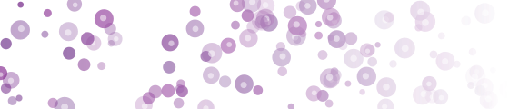

Computer Vision for Computational and Digital Pathology
Gigapixel whole-slide images, real domain shift, weak supervision and dense prediction at cellular scale are computer vision problems. With pathology foundation models now openly available, they are open to the whole WACV community, not only to groups with clinical data access.